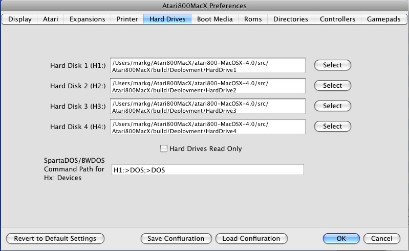

Atari800MacX Help
Preferences Window
Hard Drives Tab
This tab allows you to set the directories used by the emulator for the
Hard Disk Device Emulator, H: , and for the newly added (version 4.0
and later) D: patch emulator, which uses some of the same directories
used for H:.

There are four directories, and they
are mapped to devices as follows:
H0: – program directory, no conversion
H1: - H4: – directories #1-#4, no conversion
H5: – program directory, text conversion
applied
H6: - H9: – directories #1-#4, text conversion
applied
The D: patch used D5-D8 as Hard Disk drives, which use the same
directories as some of the H: devices. The mapping is as follows:
D5 - directory #1, no conversion
D6 - directory #2, no conversion
D7 - directory #1, text conversion applied
D8 - directory #2, text conversion applied
You use the checkbox at the bottom of the tab to make the H: devices
read only, as opposed to read/write. D: devices are also made read only using the same checkbox.
The
new D: patch has the advantage that it works in many programs that will
not support H:, but only recognize D: devices, such as Action!.
It is also fully compatible with MyDos, including the default
directory which can be accessed as D:. The patch is dynamic, and
reinstalls itself whenever the DOS overwrites it. It does require
a DOS, however, and will not work without a DOS as H: will.
Starting in version 1.1, Atari800MacX supports all normal DOS functions
for the hard drives, including Rename, Delete, Note, Point, and Open
for
modify (read/write). One caveat is that all file names created
from
the Mac side should be lower case.
Starting in version 1.2, Atari800MacX supports subdirectories on the
hard drives.
Note, the Delete function will not work on Hard Drives from the Atari
DOS 2.x or MYDOS menus, as they do not recognize Hx: as a drive.
However, the XIO functions will work to delete.
All file and Directory functions are supported by SpartaDos or BWDos
from
the command line, as well as from their XIO equivalents. Binary
Load
(with all options) will also work with MYDOS and its XIO equivelents.
Also, there is a capability to specify a Command Path for use with
SpartaDos
and BW-DOS when issuing command from the Hx: prompt. The normal
path
used with Dx: drives will not work, as this is part of the driver for
the
Dx: devices in the DOS. The paths specified here are separated by
semicolons,
and may include the normal directory seperator character ('>'').
The
path defaults to "H1:>DOS;>DOS". This means that the "DOS"
directory
on Hard Drive 1 will be searched for the command, then the "DOS"
directory
on the current drive, then finally the current directory will be
searched.